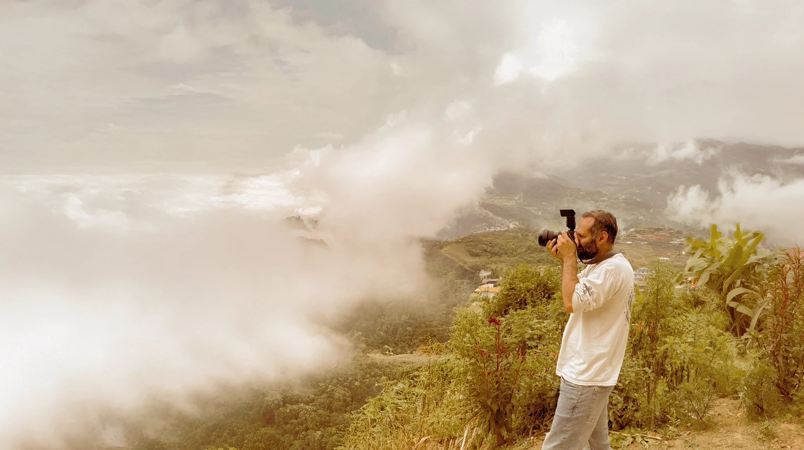
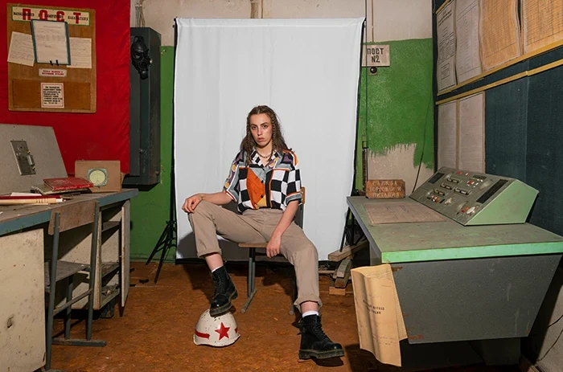
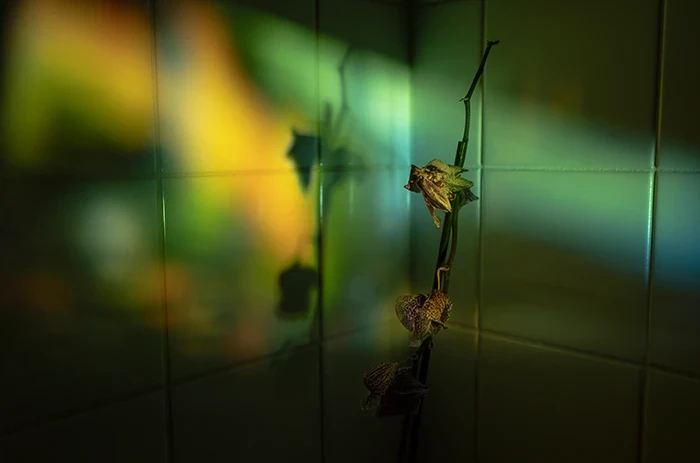
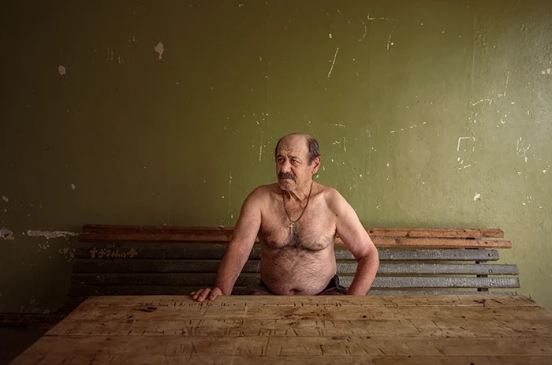
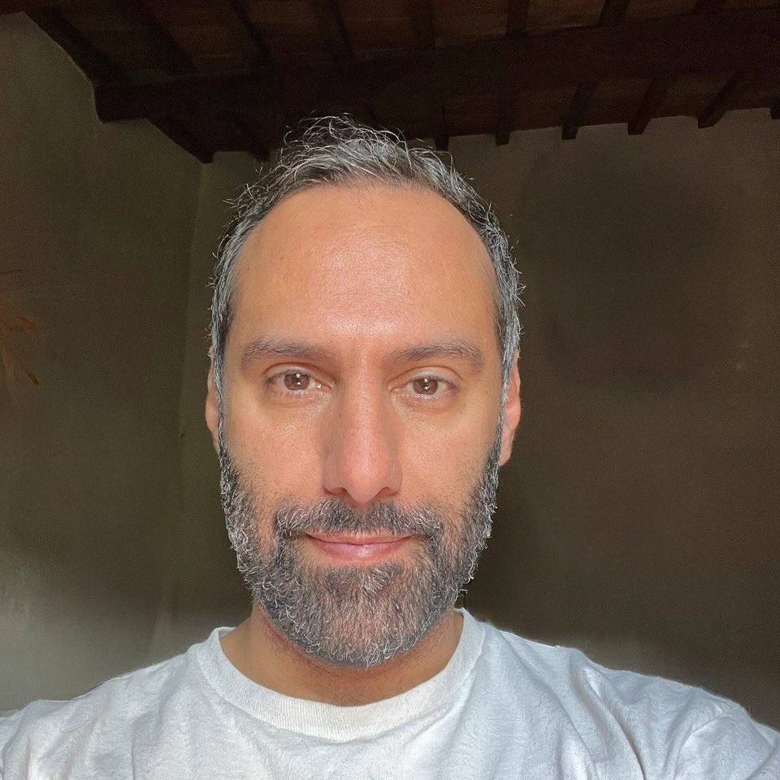
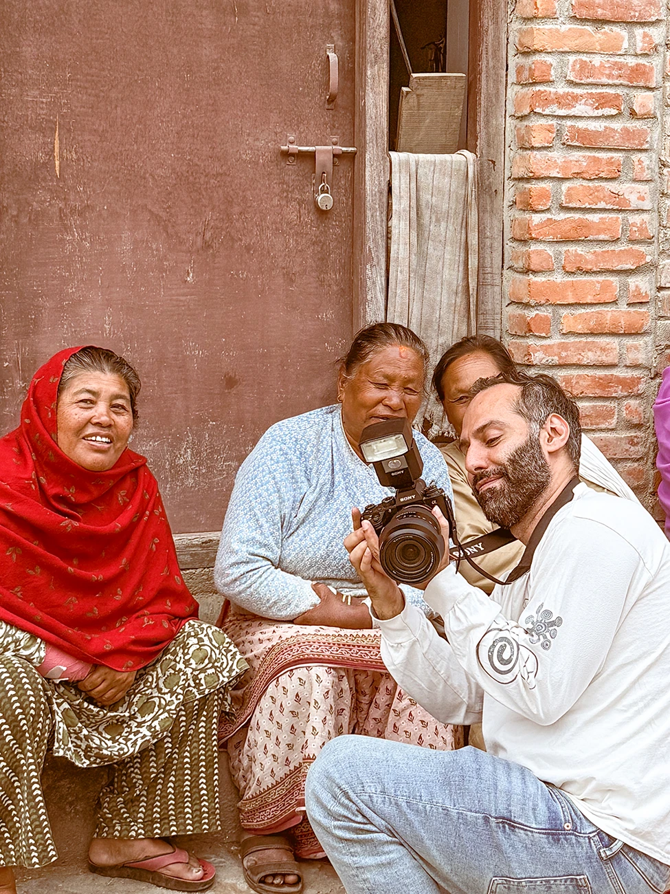
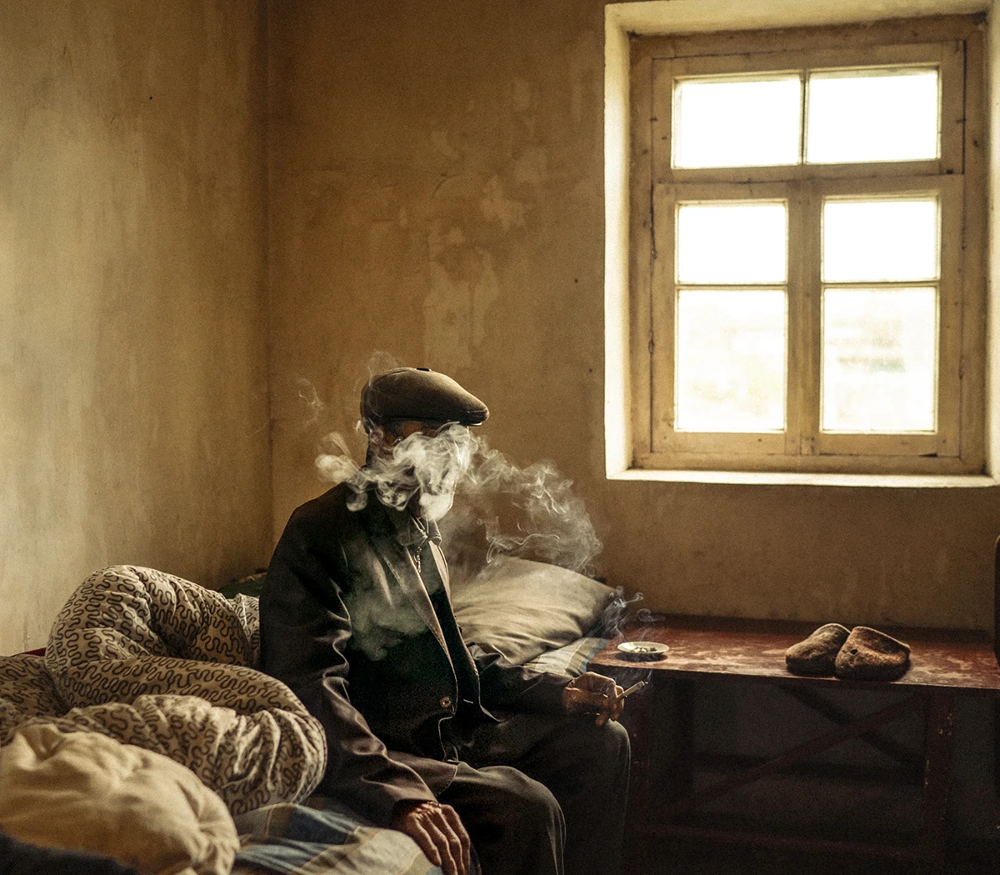
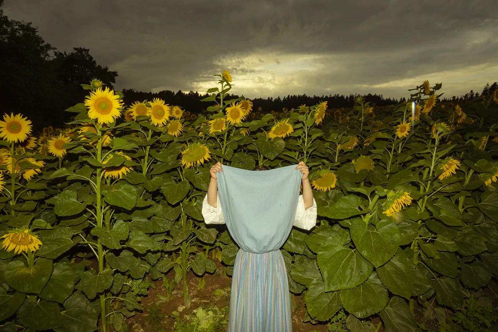

A private mentorship for photographers who want clarity, direction, and a stronger relationship with their own work, guided one to one by Hossein Fardinfard.
One path for everyone: a Direction Session, a written proposal, and a program built only for you.
There is no menu of programs here. Every mentorship begins the same way and becomes something different for every photographer.

© Hossein FardinfardA private 60-minute call. We review your work, your blocks, and your goals, honestly. USD 90, credited toward your program if you continue.

© Hossein FardinfardWithin 48 hours you receive a one-page proposal: what we will work on, how many sessions, over how many weeks, and the exact price.

© Hossein FardinfardBuilt only for you: private sessions, an assignment after each one, and feedback on your work between sessions.

I trained at the Royal Academy of Art in The Hague and have spent over a decade making documentary and portrait work, recognised by international awards and exhibited from Arles to London.
But after years of mentoring photographers, one pattern kept repeating: what holds most people back is rarely only technique. It's direction, confidence, and understanding what genuinely belongs to you. That's what this mentorship is built around.
B.A. Photography, The Hague
People Photographer of the Year
& British Journal of Photography
Arles · London · Norway · USA

Over the years, photography taught me something I didn't expect.
Many of the answers we are searching for are not outside of us, but within us.
I believe that every photographer already has something unique to offer: their own way of seeing, their own experiences, and their own perspective on the world.
The challenge is learning how to recognize it, develop it, and express it through their work.
This program was created to help photographers discover that part of themselves and learn to translate it into meaningful, impactful work.
Every program is built on four pillars. Your Direction Session reveals which ones you need, some photographers need one, some need all four.
Find what truly belongs to you.
Turn ideas into images that carry intention.
How your work is seen shapes how it is understood.
Build a sustainable place in the photographic world.

© Hossein Fardinfard
© Hossein Fardinfard